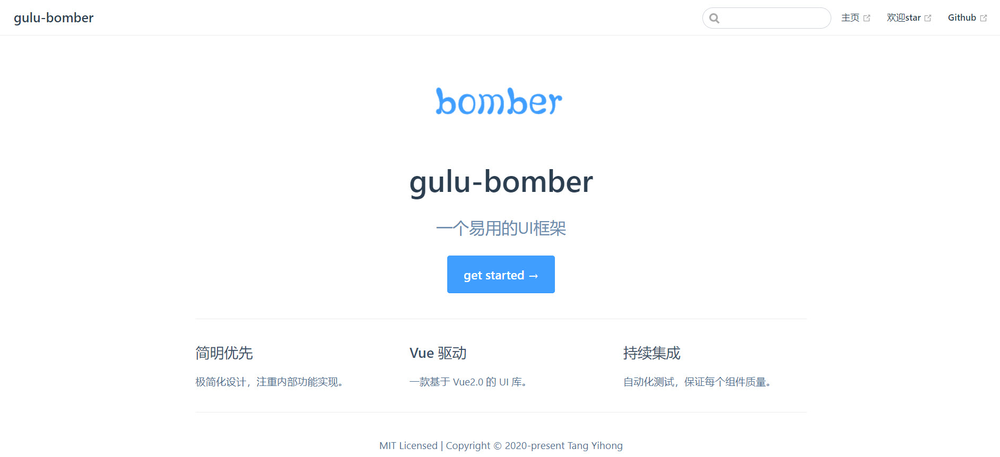
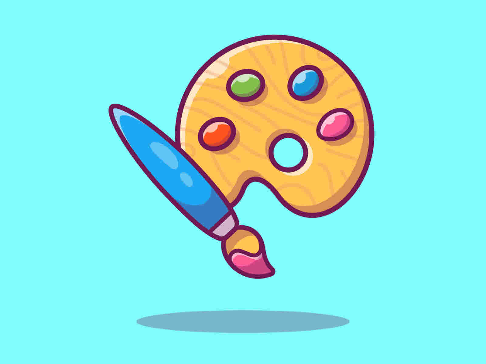

项目经历
gulu-bomber UI
- 项目介绍：该项目是参照 Ant Design、Element UI、iView 等 UI 库思路，做的一个基于 Vue 的简易UI 组件库，目前已支持按钮、输入框、网格、布局、Toast、Tabs、Popover、手风琴等组件。每个组件均经历从需求分析到 Mocha 单元测试，并用TravisCI 实现持续集成，最终以 VuePress 为基础制作官方文档，发布于 npmjs.org。完成该项目使我对 Vue 组件化等常用特征更加熟悉，同时提升了自己对前端工程化流程以及单元测试重要性的深刻理解，近一步开源文化。
- 技术栈：Vue.js/ VuePress/ ES6/ Parcel/ Npm Scripts/ Mocha/ SCSS/ TravisCI
- 项目源码： 点击进入
- 浏览链接： 点击进入
小程序：遍历翻译

- 项目介绍：一款提供翻译功能的微信小程序，遍历有浏览所有翻译历史之意。该项目以百度翻译 API 为服务器域名提供支持，主要包含翻译首页、语言列表页和翻译历史页。项目逻辑简单，页面清新，提供了近 7 种语言选择，欢迎尝试。
- 项目源码：点击进入
- 浏览项目：微信搜索小程序——遍历翻译或扫描示例图中二维码

简易画板

关于我
熟练 HTML、DIV + CSS 的页面布局，能根据设计图像素级完成页面制作，熟悉 HTML 5 及语义化，了解 Canvas 动画制作，掌握 CSS 3 动画、过渡效果等常用技术
熟悉原生Javascript， 会使用 ES6常用规范，了解 jQuery 常用 API 及思想
了解 HTTP 相关知识，了解常见的 Web 性能优化方案
熟悉Yarn & Npm & Git ，熟练使用 VsCode、WebStorm、Git 等开发工具
面向Google及Stack Overflow编程 :)。 拥有总结书写技术博客(点击进入)的习惯
熟悉 Vue 常用功能，理解如生命周期、组件、虚拟 DOM、数据响应式等概念，能够使用 Vue 开发项目
有移动端开发经验，会使用REM、vw/ vh、响应式 等技术制作适配手机设备的页面
了解Node.js，能够开发简单的后台服务器
个人经历
2010 年 7 月南华大学核工程与核技术专业本科毕业后分别就职如下- 2010.7-2014.12长沙锅炉厂从事机械设计，并委派中广核工程设计有限公司从事容器设计
- 2015.1-2018.12华科四维工程咨询有限公司，并委派中珐核能工程技术有限公司从事机械设计，合同执行，技术文件审查，离职后获得该公司的工作推荐信及工作介绍信
- 2019.1-2019.12惠州大亚湾东业电子工程有限公司从事建造师相关工作
- 目前是离职状态，工作期间接触了前端，发现自己热爱技术，迄今为止利用所有业余时间自学前端一年左右。 热爱 coding，享受调试代码及解决 bug 的过程，享受通过各种代码组合实现自己成果的过程。有良好的代码规范，热衷分享，崇尚开源文化。